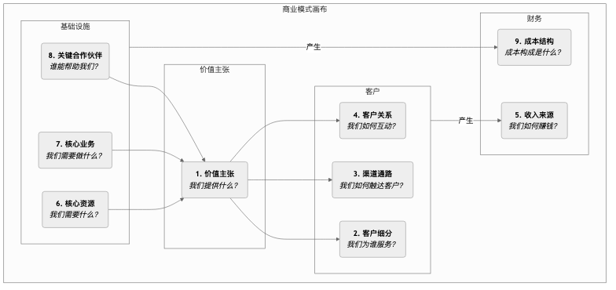

商业模式画布¶
一个商业创意，无论多么激动人心，如果不能转化为一个可行的、可持续盈利的系统，就只能是空中楼阁。商业模式画布（Business 模型 Canvas） 是由亚历山大·奥斯特瓦德（Alexander Osterwalder）和伊夫·皮尼厄（Yves Pigneur）提出的一个革命性的战略管理和创业工具。它提供了一种简洁、直观的“共同语言”，让团队能够在一张图上，清晰地描述、设计、评估和迭代一个商业模式的全部核心元素。
商业模式画布的魅力在于，它将一个原本复杂、多变的商业系统，解构为九个相互关联、逻辑清晰的构造块。这九个构造块覆盖了商业的四大主要领域：客户、产品/服务、基础设施和财务可行性。通过将这些构造块系统地呈现在一张画布上，创业者和管理者可以鸟瞰整个商业模式的全貌，识别其关键驱动因素、潜在风险和创新机会，从而促进更深入的战略对话和更敏捷的决策制定。
画布的九个构造块¶
商业模式画布的核心是一个包含九个格子的模板，每个格子都代表了商业模式的一个关键方面。
- 价值主张（Value Propositions）：这是画布的核心。它描述了你为特定客户群体所创造的价值，解决了他们的什么痛点，或满足了他们的什么需求。它应该是独特的、与众不同的。

如何使用商业模式画布¶
-
打印一张大画布
将画布打印在一张大海报上，准备好大量的便利贴和记号笔。画布的物理性对于团队协作和讨论至关重要。
-
从右到左，先客户后基础
一个推荐的填写顺序是先从画布的右侧（客户侧）开始，再到中间的价值主张，最后到左侧的基础设施侧。即：客户细分 -> 价值主张 -> 渠道通路 -> 客户关系 -> 收入来源。这确保了你的商业模式始终是以客户为中心的。
-
用便利贴进行头脑风暴
对于每个构造块，团队成员将自己的想法写在便利贴上，并贴到相应的格子里。使用便利贴的好处在于，想法可以被轻松地移动、修改和替换。
-
连接与讲述故事
当画布被填满后，尝试讲述你的商业模式“故事”。从你的目标客户（CS）开始，讲述你如何通过你的价值主张（VP）和渠道（CH）为他们服务，并最终获得收入（R）。然后，再讲述为了实现这一切，你需要哪些资源（KR）、活动（KA）和伙伴（KP），以及它们会产生哪些成本（C）。检查这个故事的逻辑是否通顺、各个模块之间是否匹配。
-
评估与迭代
对画布上的商业模式进行评估。它的优势在哪里？弱点和风险是什么？然后，通过移动或替换便利贴，来探索不同的可能性，设计出更优的商业模式。
应用案例¶
案例一：Nespresso（奈斯派索）胶囊咖啡机
- 客户细分：追求品质和便利的家庭及办公室用户。
- 价值主张：在家中就能轻松、快速地制作一杯媲美咖啡馆品质的意式浓缩咖啡。
- 渠道通路：通过官网、高端百货专柜和自己的精品店直接销售。
- 客户关系：建立Nespresso俱乐部，提供会员服务和专属体验。
- 收入来源：采用“剃刀与刀片”模式。咖啡机（剃刀）本身利润不高，主要通过持续销售高利润的、受专利保护的咖啡胶囊（刀片）来赚钱。
- 核心资源：强大的品牌、专利技术（胶囊系统）、生产设施。
- 核心业务：市场营销、供应链管理、产品研发。
- 关键伙伴：咖啡机制造商、咖啡农。
- 成本结构：高昂的营销和品牌建设成本、生产成本。
案例二：Airbnb（爱彼迎）
- 客户细分：双边平台，一边是拥有闲置房间的房东，另一边是寻求独特、本地化住宿体验的旅行者。
- 价值主张：为房东提供轻松赚钱的方式；为旅行者提供比酒店更便宜、更具本土风情的住宿选择。
- 渠道通路：网站和移动App。
- 客户关系：建立基于信任的社区，通过评价体系、用户支持来维护关系。
- 收入来源：向房东和房客双方收取一定比例的佣金。
- 核心资源：平台本身、庞大的用户和房源网络、品牌。
- 核心业务：平台开发与维护、社区运营、市场推广。
- 关键伙伴：摄影师（为房源拍照）、支付平台、保险公司。
- 成本结构：平台维护成本、营销成本、客户服务成本。
案例三：免费手机游戏（以《王者荣耀》为例）
- 客户细分：广大的游戏玩家（免费用户）和少数愿意为增值服务付费的付费玩家。
- 价值主张：提供高质量、免费的竞技娱乐体验。
- 渠道通路：应用商店（App Store, Google Play）。
- 客户关系：通过游戏内的社交系统、活动和电竞赛事来维持社群活跃度。
- 收入来源：主要通过销售不影响游戏平衡的虚拟物品（如英雄皮肤、装饰品）来向付费玩家收费（免费增值模式）。
- 核心资源：游戏IP、开发团队、庞大的用户基础。
- 核心业务：游戏开发与更新、社区运营、电竞赛事组织。
- 关键伙伴：应用商店渠道、电竞俱乐部、直播平台。
- 成本结构：高昂的研发和服务器成本、市场营销费用。
商业模式画布的价值与局限¶
核心价值
- 直观与整体性：将复杂的商业逻辑可视化，帮助团队建立全局观。
- 促进沟通与共识：提供了一种通用的语言，极大地促进了团队内部的战略对话。
- 敏捷与迭代：非常适合用于探索和迭代新的商业模式，尤其是在充满不确定性的早期阶段。
潜在局限
- 忽略竞争：画布本身没有专门的模块来分析竞争环境。
- 静态快照：它描绘的是商业模式的结构，但没有完全展现其动态演变的过程。
- 需要与其他工具结合：为了做出更稳健的决策，通常需要与价值主张画布、SWOT分析等其他工具结合使用。
延伸与关联¶
- 精益画布（Lean Canvas）：是商业模式画布的一个变体，更适用于不确定性极高的早期创业项目，它将“关键伙伴”、“核心业务”、“核心资源”和“客户关系”替换为更关注问题和解决方案的模块。
- 价值主张画布（Value Proposition Canvas）：可以视为商业模式画布中“价值主张”和“客户细分”这两个模块的放大和深化，帮助你更精细地设计产品与市场的匹配。
- 蓝海战略：在运用蓝海战略的四步动作框架构思出一个新的价值曲线后，可以用商业模式画布来系统地设计支撑这个新战略的商业模式。
来源参考：亚历山大·奥斯特瓦德（Alexander Osterwalder）和伊夫·皮尼厄（Yves Pigneur）的著作《商业模式新生代》（Business 模型 Generation）是该工具的权威指南，书中包含了大量的案例和详细的使用说明。